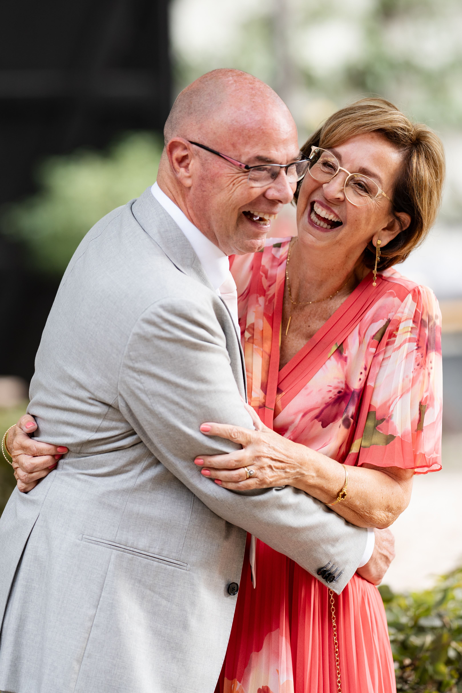

Een dag om in te lijsten
Herinneringen
Foto's door MOMENTS To Focus On Instagram





Binnenkort
Onze trouwfilm
De film van onze dag volgt binnenkort
18 september 2026 · Kasteel Tongelaar
Een dag vol liefde, om steeds opnieuw te beleven.
Getrouwd sinds
Een dag om in te lijsten
Foto's door MOMENTS To Focus On Instagram

Binnenkort
De film van onze dag volgt binnenkort